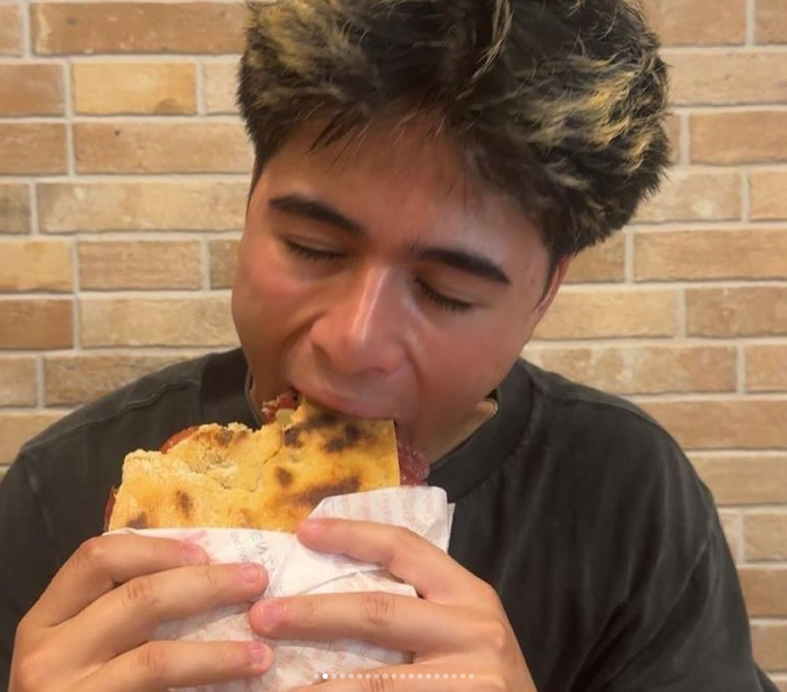

<!DOCTYPE html>

<html lang="en">
<head>

    <link rel="stylesheet" href="styles.css">
    <title>Full Name Portfolio</title>
    <meta charset="UTF-8">
    <meta name="viewport" content="width=device-width", initial-scale=1.0>

  <header>
    <section id="header" style="max-width: 1200px; margin: 40px auto; text-align: center;">
        <h1>Welcome to my Portfolio!</h1>
  </header>

</html>
</head>
<body>

    <section id="about-me" style="max-width: 600px; margin: 40px auto; text-align: center;">
        
        <h1>Zack Antaramian</h1>
        <h2>Major: Mechanical Engineering</h2>
        <h3>College: University of Florida</h3>
        <p>Hello, my name is Zack Antaramian, and welcome to my portfolio. I am a MechE student at UF, and I'm trying to get more familiar with coding.</p>

    </section>
     <section id="experiences">
      <h2>Projects & Experiences</h2>
      <ul>
        <li><strong>STEPUP Program:</strong> Corporate tours, networking with industry engineers, and hands-on skill-building for aspiring mechanical engineers.</li>
        <li>Gator Motorsports: CAD modeling, component testing, and real-world application of vehicle dynamics.</li>
        <li>Diet Coke Keychain Model: Designed in Onshape with logo wrapping and scaling for realism.</li>
        <li>Constructed a research paper exploring the possibilities of implementing bioreactors in space for sustainability, in addition to presenting it in front of class and filming a video covering a research poster for the paper as well.</li>
        <li>Developed a personal website (this) to showcase my projects and experiences.</li>
        <li>Participated in social activities on Saturdays, such as volleyball, billiards, fooseball, bowling, etc.</li>
        <li>Reached out to Dr. Greenslet, who offered me a potential research lab position coming in the Fall Semester.</li>
        <li>Attended numerous personal/professional/academic workshops to help strengthen my resume, improve my networking skills, and sharpen my Calculus and Chemistry knowledge before the Fall Semester.</li>
      </ul>
    </section>

    <section id="interests">
      <h2>Interests</h2>
      <p>I want to explore radiation shielding in space environments, surface engineering in motorsports, and competitive gaming mechanics. I’m currently trying to learn in Fusion 360 and Onshape.</p>
    </section>

    <section id="contact">
      <h2>Contact Me</h2>
      <p>Email: <a href="mailto:zantaramian@ufl.edu">zantaramian@ufl.edu</a></p>
      <p>GitHub: <a href="https://github.com/dogsupplier" target="_blank">dogsupplier</a></p>
      <p>LinkedIn: <a href="https://www.linkedin.com/in/zackantaramian" target="_blank">Zack Antaramian</a></p>
    </section>
  </main>

  <footer style="text-align: center; padding: 1rem;">
    <p>© 2025 Zack Antaramian</p>
  </footer>


</body>
</html>
